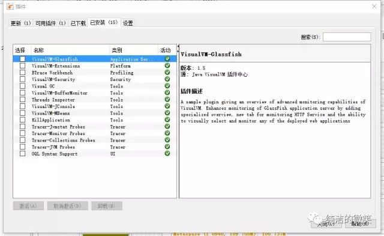

jvm系列(七):jvm调优-工具篇
16年的时候花了一些时间整理了一些关于jvm的介绍文章,到现在回顾起来还是一些还没有补充全面，其中就包括如何利用工具来监控调优前后的性能变化。工具做为图形化界面来展示更能直观的发现问题，另一方面一些耗费性能的分析（dump文件分析）一般也不会在生产直接分析，往往dump下来的文件达1G左右，人工分析效率较低，因此利用工具来分析jvm相关问题，长长可以到达事半功倍的效果来。
jvm监控分析工具一般分为两类，一种是jdk自带的工具，一种是第三方的分析工具。jdk自带工具一般在jdk bin目录下面，以exe的形式直接点击就可以使用，其中包含分析工具已经很强大，几乎涉及了方方面面，但是我们最常使用的只有两款：jconsole.exe和jvisualvm.exe；第三方的分析工具有很多，各自的侧重点不同，比较有代表性的：MAT(Memory Analyzer Tool)、GChisto等。
对于大型 JAVA 应用程序来说，再精细的测试也难以堵住所有的漏洞，即便我们在测试阶段进行了大量卓有成效的工作，很多问题还是会在生产环境下暴露出来，并且很难在测试环境中进行重现。JVM 能够记录下问题发生时系统的部分运行状态，并将其存储在堆转储 (Heap Dump) 文件中，从而为我们分析和诊断问题提供了重要的依据。其中VisualVM和MAT是dump文件的分析利器。
jdk自带的工具
jconsole
Jconsole（Java Monitoring and Management Console）是从java5开始，在JDK中自带的java监控和管理控制台，用于对JVM中内存，线程和类等的监控，是一个基于JMX（java management extensions）的GUI性能监测工具。jconsole使用jvm的扩展机制获取并展示虚拟机中运行的应用程序的性能和资源消耗等信息。
直接在jdk/bin目录下点击jconsole.exe即可启动，界面如下:
在弹出的框中可以选择本机的监控本机的java应用，也可以选择远程的java服务来监控，如果监控远程服务需要在tomcat启动脚本中添加如下代码：
-Dcom.sun.management.jmxremote.port=6969-Dcom.sun.management.jmxremote.ssl=false-Dcom.sun.management.jmxremote.authenticate=false
连接进去之后，就可以看到jconsole概览图和主要的功能：概述、内存、线程、类、VM、MBeans
- 概述，以图表的方式显示出堆内存使用量，活动线程数，已加载的类，CUP占用率的折线图，可以非常清晰的观察在程序执行过程中的变动情况。
- 内存，主要展示了内存的使用情况，同时可以查看堆和非堆内存的变化值对比，也可以点击执行GC来处罚GC的执行
- 线程，主界面展示线程数的活动数和峰值，同时点击左下方线程可以查看线程的详细信息，比如线程的状态是什么，堆栈内容等，同时也可以点击“检测死锁”来检查线程之间是否有死锁的情况。
- 类，主要展示已加载类的相关信息。
- VM 概要，展示JVM所有信息总览，包括基本信息、线程相关、堆相关、操作系统、VM参数等。
- Mbean,查看Mbean的属性，方法等。
VisualVM
简介
VisualVM 是一个工具，它提供了一个可视界面，用于查看 Java 虚拟机 (Java Virtual Machine, JVM) 上运行的基于 Java 技术的应用程序（Java 应用程序）的详细信息。VisualVM 对 Java Development Kit (JDK) 工具所检索的 JVM 软件相关数据进行组织，并通过一种使您可以快速查看有关多个 Java 应用程序的数据的方式提供该信息。您可以查看本地应用程序以及远程主机上运行的应用程序的相关数据。此外，还可以捕获有关 JVM 软件实例的数据，并将该数据保存到本地系统，以供后期查看或与其他用户共享。
VisualVM 是javajdk自带的最牛逼的调优工具了吧，也是我平时使用最多调优工具，几乎涉及了jvm调优的方方面面。同样是在jdk/bin目录下面双击jvisualvm.exe既可使用，启动起来后和jconsole 一样同样可以选择本地和远程，如果需要监控远程同样需要配置相关参数，主界面如下；
VisualVM可以根据需要安装不同的插件，每个插件的关注点都不同，有的主要监控GC，有的主要监控内存，有的监控线程等。

如何安装：
1、从主菜单中选择“工具”>“插件”。2、在“可用插件”标签中，选中该插件的“安装”复选框。单击“安装”。3、逐步完成插件安装程序。
我这里以 Eclipse(pid 22296)为例，双击后直接展开，主界面展示了系统和jvm两大块内容，点击右下方jvm参数和系统属性可以参考详细的参数信息.
因为VisualVM的插件太多，我这里主要介绍三个我主要使用几个：监控、线程、Visual GC
监控的主页其实也就是，cpu、内存、类、线程的图表
线程和jconsole功能没有太大的区别
Visual GC 是常常使用的一个功能，可以明显的看到年轻代、老年代的内存变化，以及gc频率、gc的时间等。
jvm调优-工具篇_files/eclipse7 [1].webp)
以上的功能其实jconsole几乎也有，VisualVM更全面更直观一些，另外VisualVM非常多的其它功能，可以分析dump的内存快照，dump出来的线程快照并且进行分析等，还有其它很多的插件大家可以去探索
第三方调优工具
MAT
MAT是什么？
MAT(Memory Analyzer Tool)，一个基于Eclipse的内存分析工具，是一个快速、功能丰富的Java heap分析工具，它可以帮助我们查找内存泄漏和减少内存消耗。使用内存分析工具从众多的对象中进行分析，快速的计算出在内存中对象的占用大小，看看是谁阻止了垃圾收集器的回收工作，并可以通过报表直观的查看到可能造成这种结果的对象。
通常内存泄露分析被认为是一件很有难度的工作，一般由团队中的资深人士进行。不过要介绍的 MAT（Eclipse Memory Analyzer）被认为是一个“傻瓜式“的堆转储文件分析工具，你只需要轻轻点击一下鼠标就可以生成一个专业的分析报告。和其他内存泄露分析工具相比，MAT 的使用非常容易，基本可以实现一键到位，即使是新手也能够很快上手使用。
MAT以eclipse 插件的形式来安装，具体的安装过程就不在描述了，可以利用visualvm或者是 jmap命令生产堆文件，导入eclipse mat中生成分析报告：
生产这会报表的同时也会在dump文件的同级目录下生成三份（dump_Top_Consumers.zip、dump_Leak_Suspects.zip、dump_Top_Components.zip）分析结果的html文件，方便发送给相关同事来查看。
需要关注的是下面的Actions、Reports、Step by Step区域：
- Histogram：列出内存中的对象，对象的个数以及大小，支持正则表达式查找，也可以计算出该类所有对象的retained size
- Dominator Tree：列出最大的对象以及其依赖存活的Object （大小是以Retained Heap为标准排序的）
- Top Consumers ： 通过图形列出最大的object
- duplicate classes ：检测由多个类装载器加载的类
- Leak Suspects ：内存泄漏分析
- Top Components: 列出大于总堆数的百分之1的报表。
- Component Report:分析对象属于同一个包或者被同一个类加载器加载
以上只是一个初级的介绍，mat还有更强大的使用，比如对比堆内存，在生产环境中往往为了定位问题，每隔几分钟dump出一下内存快照，随后在对比不同时间的堆内存的变化来发现问题。
GChisto
GChisto是一款专业分析gc日志的工具，可以通过gc日志来分析：Minor GC、full gc的时间、频率等等，通过列表、报表、图表等不同的形式来反应gc的情况。虽然界面略显粗糙，但是功能还是不错的。
配置好本地的jdk环境之后，双击GChisto.jar,在弹出的输入框中点击 add 选择gc.log日志
- GC Pause Stats:可以查看GC 的次数、GC的时间、GC的开销、最大GC时间和最小GC时间等，以及相应的柱状图
- GC Pause Distribution:查看GC停顿的详细分布，x轴表示垃圾收集停顿时间，y轴表示是停顿次数。
- GC Timeline：显示整个时间线上的垃圾收集
不过这款工具已经不再维护，不能识别最新jdk的日志文件。
gcviewer
GCViewer也是一款分析小工具，用于可视化查看由Sun / Oracle, IBM, HP 和 BEA Java 虚拟机产生的垃圾收集器的日志，gcviewer个人感觉显示 的界面比较乱没有GChisto更专业一些。
GC Easy
这是一个web工具,在线使用非常方便.
地址: http://gceasy.io
进入官网，讲打包好的zip或者gz为后缀的压缩包上传，过一会就会拿到分析结果。
推荐使用此工具进行gc分析。